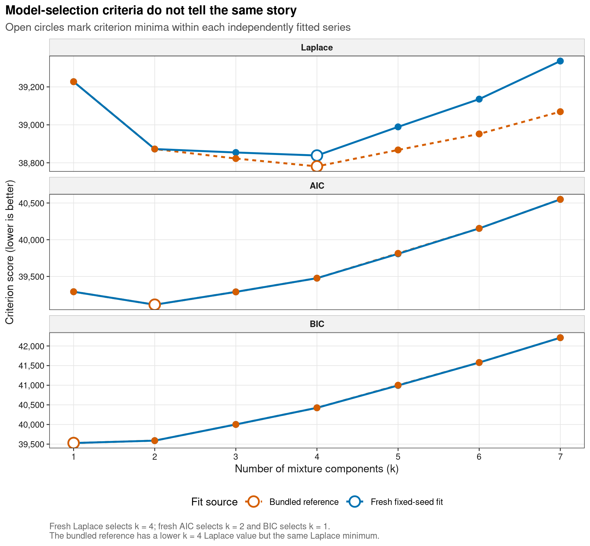
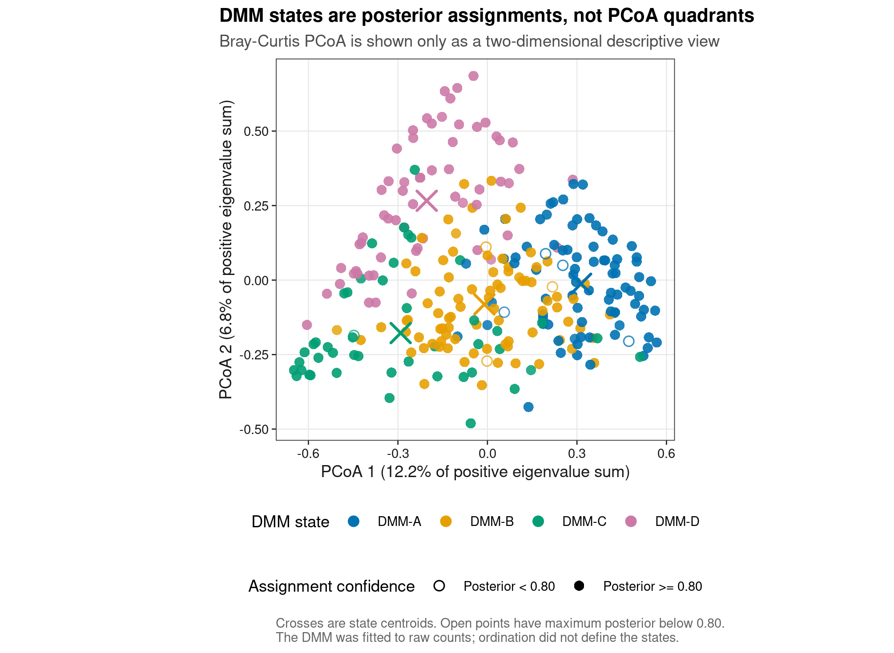
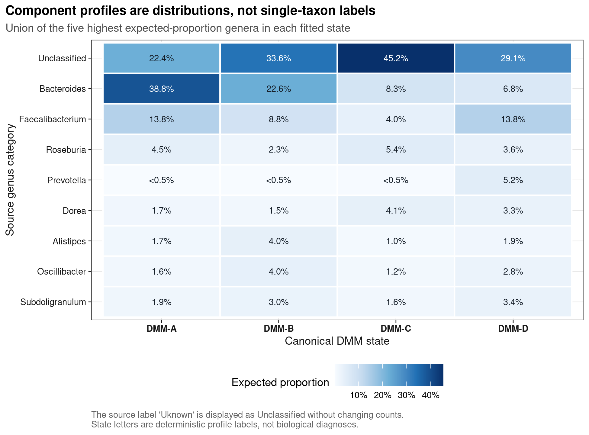
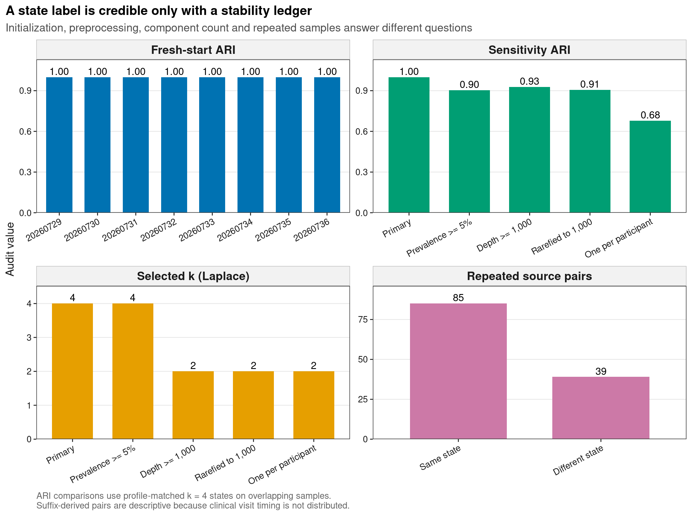

options(timeout = 600)
data_url <- "https://raw.githubusercontent.com/petemeng/microbiome-best-practices/3cb6a817e0c73ab7ecbec1cedc1ad80cbb9ecfaa/"
input_files <- c(
"data/small/community-typing-dmm/metadata.tsv",
"data/small/community-typing-dmm/otutab.tsv",
"data/small/community-typing-dmm/source-summary.json",
"data/small/community-typing-dmm/taxonomy.tsv"
)
for (path in input_files) {
dir.create(dirname(path), recursive = TRUE, showWarnings = FALSE)
if (!file.exists(path)) download.file(paste0(data_url, path), path, mode = "wb", quiet = TRUE)
}群落分型 DMM（肠型/CST）
群落分型是概率模型，不是天然类别
群落分型常见于论文中的三类图：模型证据随 component 数 k 的曲线、按“肠型”（enterotype）或阴道群落状态型（community state type, CST）着色的排序图，以及各状态优势类群的组成热图。Holmes 等人的原文可直接查看 Figure 1：Laplace model evidence、Figure 2：按四个 component 着色的 NMDS 和 Table 4：BMI 与 component 的列联表。真正需要回答的不是“软件能分成几类”，而是：离散状态是否比连续梯度更有支持，样本属于某状态的把握有多大，换一种合理的数据处理后结论是否仍成立。
本页使用 DirichletMultinomial 1.46.0 随包分发的真实 Twins 属级 16S 计数。原队列来自 Turnbaugh et al. (2009) 的双胞胎肠道微生物组研究；Holmes et al. (2012)用这组数据演示 DMM。包内表保留 278 个样本、570,851 reads、129 个命名 genus 加一个来源标签拼作 Uknown 的未分类项。这里保留原始标签和计数，只在图中把 Uknown 显示为 Unclassified。
重要先给结论
主分析直接使用未转相对丰度、未加伪计数、未抽平的整数 counts，固定 seed 20260729，比较 k=1–7。Laplace approximation 在 k=4 最小，得到 85、86、46、61 个样本的四个状态；但 AIC 在 k=2 最小，BIC 在 k=1 最小。四分型是一个需要继续审计的工作模型，不是三个准则共同确认的天然分类。
四个 component 以 fitted Bacteroides 比例递减、再以 Prevotella 比例递减的确定性规则命名为 DMM-A 至 DMM-D，避免把原始 component number 当作固定身份。278 个样本中有 8 个最大后验概率低于 0.80，不能把它们画成毫无歧义的 hard class。
八个一次性进程中的独立初始化都进入与主模型相同的 partition，profile-matched adjusted Rand index（ARI）均为 1；最低 Laplace 的 seed 20260735 也得到同一 partition。初始化审计支持当前四分型的 optimizer stability，但不替代过滤、深度、抽平和实验单位敏感性。
5% prevalence 过滤后，Laplace 仍选 k=4；只保留深度至少 1,000 reads、把这些样本稀释到 1,000 reads、或每位参与者只留一个样本时，Laplace 都改选 k=2。固定比较 k=4 时，这四条分支与主分类的 matched ARI 分别约为 0.904、0.928、0.906、0.680。
字符串后缀可构造 154 个 ParticipantKey，其中 124 个有两份来源样本；85/124 对状态相同，agreement 为 68.5%，ARI 为 0.377。包内没有独立临床访视表，因此后缀只用于重复样本审计，不能解释成已经验证的时间顺序。BMI 只做描述性交叉表，不做疾病关联检验。
模型选择、后验着色 PCoA、component profile 热图和稳定性账本共同检查分型是否可解释且稳定。
下载并读取本次分析的数据
需要 R，以及 DirichletMultinomial、ggplot2、knitr、ragg、readr、scales、svglite、vegan。本次使用群落分型示例的 count、taxonomy 和 metadata 三张表。
在一个新建的文件夹中运行以下代码，下载文件后按文中的顺序继续分析：
library(ggplot2)
set.seed(20260729)
font_pub <- "sans"
pal_pub <- c(
blue = "#0072B2",
orange = "#E69F00",
green = "#009E73",
vermillion = "#D55E00",
purple = "#CC79A7",
sky = "#56B4E9",
yellow = "#F0E442",
grey = "#6B7280"
)
scale_color_pub <- function(..., values = unname(pal_pub)) {
ggplot2::scale_color_manual(..., values = values)
}
scale_fill_pub <- function(..., values = unname(pal_pub)) {
ggplot2::scale_fill_manual(..., values = values)
}
theme_pub <- function(base_size = 10, base_family = font_pub) {
ggplot2::theme_bw(base_size = base_size, base_family = base_family) +
ggplot2::theme(
panel.grid.minor = ggplot2::element_blank(),
panel.grid.major = ggplot2::element_line(
colour = "#E6E6E6", linewidth = 0.25
),
axis.text = ggplot2::element_text(colour = "#1A1A1A"),
axis.title = ggplot2::element_text(colour = "#1A1A1A"),
axis.ticks = ggplot2::element_line(
colour = "#1A1A1A", linewidth = 0.3
),
plot.title.position = "plot",
plot.title = ggplot2::element_text(
face = "bold", size = ggplot2::rel(1.15)
),
plot.subtitle = ggplot2::element_text(colour = "#4D4D4D"),
plot.caption = ggplot2::element_text(
colour = "#666666", hjust = 0
),
strip.background = ggplot2::element_rect(
fill = "#F2F2F2", colour = "#B3B3B3", linewidth = 0.3
),
strip.text = ggplot2::element_text(face = "bold"),
legend.key = ggplot2::element_blank(),
legend.position = "top"
)
}
save_pub <- function(
plot, file_base, width = 89, height = 70, units = "mm",
dpi = 600, write_svg = TRUE, write_tiff = TRUE,
base_family = font_pub
) {
dir.create(dirname(file_base), recursive = TRUE, showWarnings = FALSE)
ggplot2::ggsave(
paste0(file_base, ".pdf"), plot,
width = width, height = height, units = units,
device = grDevices::cairo_pdf,
family = base_family, bg = "white"
)
if (isTRUE(write_svg)) {
ggplot2::ggsave(
paste0(file_base, ".svg"), plot,
width = width, height = height, units = units,
device = svglite::svglite, bg = "white"
)
}
ggplot2::ggsave(
paste0(file_base, ".png"), plot,
width = width, height = height, units = units, dpi = dpi,
device = ragg::agg_png, bg = "white"
)
if (isTRUE(write_tiff)) {
ggplot2::ggsave(
paste0(file_base, ".tiff"), plot,
width = width, height = height, units = units, dpi = dpi,
device = ragg::agg_tiff,
compression = "lzw", bg = "white"
)
}
invisible(plot)
}读取三件套，检查是否保留了原始整数计数
read_keyed_tsv <- function(path) {
x <- readr::read_tsv(
path,
show_col_types = FALSE,
progress = FALSE,
name_repair = "minimal",
na = character(),
col_types = readr::cols(.default = readr::col_character())
)
ids <- as.character(x[[1L]])
stopifnot(!anyDuplicated(ids))
out <- as.data.frame(x[-1L], check.names = FALSE)
rownames(out) <- ids
out
}
input_paths <- c(
otutab = "data/small/community-typing-dmm/otutab.tsv",
taxonomy = "data/small/community-typing-dmm/taxonomy.tsv",
metadata = "data/small/community-typing-dmm/metadata.tsv"
)
expected_sha256 <- c(
otutab = "28de822c434aedade101e66ac60a61df38124c9b59357095599fbd278f2ecb41",
taxonomy = "9eaa0bf788ad1db8c314a59e774c8935bdaa33a51135eaf606c11d5a497dff08",
metadata = "0368c9129c7d77f381688465141593a2c61a229368d2fc411c9017e1abe04409"
)
observed_sha256 <- vapply(
input_paths,
function(path) digest::digest(
file = path, algo = "sha256", serialize = FALSE
),
character(1)
)
stopifnot(identical(observed_sha256, expected_sha256))
stopifnot(
identical(
as.character(packageVersion("DirichletMultinomial")),
"1.46.0"
)
)
otu_frame <- read_keyed_tsv(input_paths[["otutab"]])
taxonomy <- read_keyed_tsv(input_paths[["taxonomy"]])
metadata <- read_keyed_tsv(input_paths[["metadata"]])
counts <- as.matrix(otu_frame)
storage.mode(counts) <- "integer"
taxonomy <- taxonomy[rownames(counts), , drop = FALSE]
metadata <- metadata[colnames(counts), , drop = FALSE]
metadata$SampleID <- rownames(metadata)
metadata$BMIClassCode <- as.integer(metadata$BMIClassCode)
metadata$SamplesPerParticipantKey <- as.integer(
metadata$SamplesPerParticipantKey
)
sample_depths <- colSums(counts)
sample_counts <- t(counts)
stopifnot(
identical(rownames(counts), rownames(taxonomy)),
identical(colnames(counts), rownames(metadata)),
nrow(counts) == 130L,
ncol(counts) == 278L,
sum(counts) == 570851L,
all(is.finite(counts)),
all(counts >= 0L),
all(counts == round(counts)),
all(rowSums(counts) > 0L),
all(colSums(counts) > 0L),
identical(range(sample_depths), c(53, 10585)),
median(sample_depths) == 1597.5
)
list(
otutab = data.frame(
FeatureID = rownames(counts)[1:5],
counts[1:5, 1:5, drop = FALSE],
check.names = FALSE
),
taxonomy = data.frame(
FeatureID = rownames(taxonomy)[1:5],
taxonomy[1:5, c("Genus", "TaxonomyStatus"), drop = FALSE],
check.names = FALSE
),
metadata = data.frame(
SampleID = metadata$SampleID[1:5],
metadata[1:5, c(
"BMIClass", "ParticipantKey", "SourceSuffix",
"SamplesPerParticipantKey"
)],
check.names = FALSE
)
)$otutab
FeatureID TS1.2 TS10.2 TS100.2 TS100 TS101.2
Acetanaerobacterium Acetanaerobacterium 0 0 0 1 0
Acetivibrio Acetivibrio 0 0 0 0 0
Acetobacterium Acetobacterium 0 0 0 0 0
Acidaminococcus Acidaminococcus 0 0 1 0 0
Actinobaculum Actinobaculum 0 0 0 0 0
$taxonomy
FeatureID Genus
Acetanaerobacterium Acetanaerobacterium Acetanaerobacterium
Acetivibrio Acetivibrio Acetivibrio
Acetobacterium Acetobacterium Acetobacterium
Acidaminococcus Acidaminococcus Acidaminococcus
Actinobaculum Actinobaculum Actinobaculum
TaxonomyStatus
Acetanaerobacterium Source genus category; higher and lower ranks are not distributed with the packaged table
Acetivibrio Source genus category; higher and lower ranks are not distributed with the packaged table
Acetobacterium Source genus category; higher and lower ranks are not distributed with the packaged table
Acidaminococcus Source genus category; higher and lower ranks are not distributed with the packaged table
Actinobaculum Source genus category; higher and lower ranks are not distributed with the packaged table
$metadata
SampleID BMIClass ParticipantKey SourceSuffix SamplesPerParticipantKey
TS1.2 TS1.2 Lean TS1 Dot2 suffix 2
TS10.2 TS10.2 Obese TS10 Dot2 suffix 2
TS100.2 TS100.2 Obese TS100 Dot2 suffix 2
TS100 TS100 Obese TS100 No suffix 2
TS101.2 TS101.2 Obese TS101 Dot2 suffix 1otutab 的列总和是 library size；DMM 需要转置成 sample × feature 后拟合。taxonomy 的空 rank 是公开数据边界，不应补造。ParticipantKey 与 SourceSuffix 是从字符串确定性派生的审计字段，不替代临床访视记录。
下载完整 R 脚本。脚本包含数据下载、计算和图形导出。
首次使用时安装 R 包
install.packages(c(
"BiocManager", "digest", "ggplot2", "jsonlite", "ragg", "readr",
"scales", "svglite", "systemfonts", "vegan"
))
BiocManager::install(version = "3.19", ask = FALSE)
BiocManager::install("DirichletMultinomial", ask = FALSE)DMM 给的是概率状态，不是血型式类别
单个 Dirichlet–多项式同时描述组成和过度离散
设样本 j 的属级计数向量为 x[j]，总 reads 为 N[j]。普通 multinomial 假定每个样本共享固定组成 p；Dirichlet–multinomial 先让样本组成从 Dirichlet distribution 波动，再生成计数：
\[ p_j \sim \mathrm{Dirichlet}(\alpha), \qquad x_j \mid p_j \sim \mathrm{Multinomial}(N_j,p_j). \]
alpha 的相对大小描述 component 的期望组成，总浓度与样本间离散程度相关。DMM 再混合 k 个这样的分布：
\[ P(x_j)=\sum_{c=1}^{k}\pi_c\, P_{\mathrm{DM}}(x_j\mid\alpha_c). \]
模型把每个样本的总 reads N[j] 纳入 likelihood，所以主输入应是非负整数 counts。相对丰度、CLR 或人为伪计数属于不同测量对象，不能悄悄传给这条 DMM 主分支。
k 是模型选择问题，不是看图数云团
DirichletMultinomial::dmn()给出 negative log evidence 的 Laplace approximation，以及 AIC 和 BIC。三者都以较小为优，但复杂度惩罚与近似方式不同。只展示支持目标 k 的一个准则，会隐藏模型选择不确定性。
本例的 fresh fit 中，Laplace、AIC、BIC 分别偏向 4、2、1。二维 PCoA 只是高维距离的投影；即使颜色看似分开，也不能反过来决定 DMM component 数。
只给一个分型标签，会掩盖边界样本的不确定性
对样本 j，模型返回每个 component 的 posterior probability：
\[ r_{jc}=P(z_j=c\mid x_j). \]
which.max(r[j, ]) 只保留最高者。最大 posterior 接近 0.5 和接近 1 的样本被同样画成一个实心颜色，会制造虚假确定性。因此至少保留：所有 component posterior、最大 posterior、normalized entropy，以及预声明的低置信度标记。
不同拟合中的分型编号不一定对应同一群落
同一个 partition 可以在一次拟合中叫 component 1，在另一次拟合中叫 component 3；这叫 label switching。直接比较数字标签会把等价解误判为不稳定。本页先按 component expected profile 做 Jensen–Shannon divergence matching，再计算 ARI。主模型内部则按 Bacteroides、Prevotella 和原始 component index 的固定顺序赋 DMM-A–DMM-D。
这个规则只负责稳定命名。DMM-A 不等于“Bacteroides enterotype”，DMM-D 也不等于疾病亚型；component profile 是完整分布，不是由一个优势菌定义的诊断。
Enterotype 与 CST 需要不同语境的外部证据
Arumugam et al. (2011)提出肠道 enterotype；Ravel et al. (2011)描述阴道 CST。Koren et al. (2013)和 Costea et al. (2018)都提醒：不同身体部位和队列可能呈离散模式，也可能是连续梯度；cluster 支持、稳定性、可迁移性和临床含义必须分别验证。
因此“发现四个 state”最多说明当前数据与合同下的概率模型支持一个四 component 描述。要升级为可复用的 enterotype/CST，还需要外部队列、批次与测序区域敏感性、纵向转移、协变量调整和生物学验证。
深入：为什么模型已经考虑 read depth，仍要做 depth sensitivity
DMM 条件在每个样本的总 reads 上建模，因此不需要为了主拟合先把所有样本抽到同一深度。但极浅文库仍提供更宽的抽样不确定性，稀有 feature 的可见性也随深度变化；feature filter 与 sample inclusion 还能改变 likelihood 的维度和样本集合。Depth sensitivity 检查的是结论对观测设计和信息量的依赖，不是宣称 rarefaction 比原始 count likelihood 更正确。
拟合DMM并检查分型是否稳定
预声明主模型和稳定命名规则
primary_seed <- 20260729L
candidate_k <- 1:7
minimum_state_size <- max(10L, ceiling(0.05 * nrow(sample_counts)))
stopifnot(minimum_state_size == 14L)
state_labels <- paste0("DMM-", LETTERS[1:4])
fit_scores <- function(fit_object) {
values <- DirichletMultinomial::goodnessOfFit(fit_object)
c(
NLE = unname(values[["NLE"]]),
LogDet = unname(values[["LogDet"]]),
Laplace = unname(values[["Laplace"]]),
BIC = unname(values[["BIC"]]),
AIC = unname(values[["AIC"]])
)
}
fit_profiles <- function(fit_object) {
x <- DirichletMultinomial::fitted(fit_object, scale = TRUE)
sweep(x, 2L, colSums(x), "/")
}
fit_posteriors <- function(fit_object, sample_ids) {
x <- DirichletMultinomial::mixture(fit_object)
x <- sweep(x, 1L, rowSums(x), "/")
rownames(x) <- sample_ids
x
}
choose2 <- function(x) x * (x - 1) / 2
adjusted_rand_index <- function(x, y) {
tab <- table(x, y)
n <- sum(tab)
sum_cells <- sum(choose2(tab))
sum_rows <- sum(choose2(rowSums(tab)))
sum_cols <- sum(choose2(colSums(tab)))
expected <- sum_rows * sum_cols / choose2(n)
maximum <- (sum_rows + sum_cols) / 2
(sum_cells - expected) / (maximum - expected)
}
all_permutations <- function(x) {
if (length(x) == 1L) return(matrix(x, nrow = 1L))
do.call(rbind, lapply(seq_along(x), function(i) {
cbind(x[[i]], all_permutations(x[-i]))
}))
}
js_divergence <- function(p, q) {
p <- p / sum(p)
q <- q / sum(q)
m <- (p + q) / 2
sum(ifelse(p > 0, p * log(p / m), 0)) / 2 +
sum(ifelse(q > 0, q * log(q / m), 0)) / 2
}
match_profiles <- function(primary_profiles, candidate_profiles) {
common <- intersect(
rownames(primary_profiles),
rownames(candidate_profiles)
)
primary <- primary_profiles[common, , drop = FALSE]
candidate <- candidate_profiles[common, , drop = FALSE]
primary <- sweep(primary, 2L, colSums(primary), "/")
candidate <- sweep(candidate, 2L, colSums(candidate), "/")
k <- ncol(primary)
cost <- outer(seq_len(k), seq_len(k), Vectorize(function(i, j) {
js_divergence(primary[, i], candidate[, j])
}))
permutations <- all_permutations(seq_len(k))
total <- apply(permutations, 1L, function(p) {
sum(cost[cbind(seq_len(k), p)])
})
best <- permutations[which.min(total), ]
list(
candidate_for_primary = as.integer(best),
divergence = cost[cbind(seq_len(k), best)],
common_features = length(common)
)
}标签规则预先固定为：Bacteroides fitted proportion 从高到低；若相同，再按 Prevotella 从高到低；仍相同则按原始 component index。不同 sensitivity fit 则用完整 profile 的最小 Jensen–Shannon divergence 一一匹配。
比较过滤、测序深度、抽平和重复采样的影响
feature_prevalence <- rowMeans(counts > 0L)
prevalence_features <- rownames(counts)[feature_prevalence >= 0.05]
depth_samples <- names(sample_depths)[sample_depths >= 1000L]
set.seed(primary_seed)
rarefied_counts <- vegan::rrarefy(
sample_counts[depth_samples, , drop = FALSE],
sample = 1000L
)
set.seed(primary_seed)
stopifnot(identical(
rarefied_counts,
vegan::rrarefy(
sample_counts[depth_samples, , drop = FALSE],
sample = 1000L
)
))
participant_indices <- split(
seq_len(nrow(metadata)),
metadata$ParticipantKey
)
one_per_participant <- vapply(participant_indices, function(idx) {
no_suffix <- idx[metadata$SourceSuffix[idx] == "No suffix"]
if (length(no_suffix) > 0L) no_suffix[[1L]] else idx[[1L]]
}, integer(1))
one_per_samples <- metadata$SampleID[one_per_participant]
branch_counts <- list(
Primary = sample_counts,
`Prevalence >= 5%` = sample_counts[
, prevalence_features, drop = FALSE
],
`Depth >= 1,000` = sample_counts[
depth_samples, , drop = FALSE
],
`Rarefied to 1,000` = rarefied_counts,
`One per participant` = sample_counts[
one_per_samples, , drop = FALSE
]
)
branch_seeds <- c(
Primary = primary_seed,
`Prevalence >= 5%` = primary_seed + 100L,
`Depth >= 1,000` = primary_seed + 200L,
`Rarefied to 1,000` = primary_seed + 300L,
`One per participant` = primary_seed + 400L
)
data.frame(
Branch = names(branch_counts),
Samples = vapply(branch_counts, nrow, integer(1)),
Features = vapply(branch_counts, ncol, integer(1)),
Seed = unname(branch_seeds[names(branch_counts)]),
check.names = FALSE
) Branch Samples Features Seed
Primary Primary 278 130 20260729
Prevalence >= 5% Prevalence >= 5% 278 67 20260829
Depth >= 1,000 Depth >= 1,000 247 130 20260929
Rarefied to 1,000 Rarefied to 1,000 247 130 20261029
One per participant One per participant 154 130 20261129Rarefied to 1,000 只包含原深度至少 1,000 的 247 个样本；它是 sensitivity branch，不替代主 count model。One per participant 优先保留无 .2 后缀的样本，若某 key 只有 .2，则保留该样本，共 154 个。
每个模型都用一次性 R 进程拟合
candidate_jobs <- expand.grid(
Branch = names(branch_counts),
K = candidate_k,
stringsAsFactors = FALSE
)
candidate_jobs$Seed <- unname(branch_seeds[candidate_jobs$Branch])
initialization_jobs <- data.frame(
Branch = "Initialization",
K = 4L,
Seed = primary_seed + 1:7,
stringsAsFactors = FALSE
)
all_jobs <- rbind(candidate_jobs, initialization_jobs)
job_payload <- lapply(seq_len(nrow(all_jobs)), function(i) {
job <- all_jobs[i, , drop = FALSE]
list(
counts = if (job$Branch == "Initialization") {
branch_counts[["Primary"]]
} else {
branch_counts[[job$Branch]]
},
k = job$K,
seed = job$Seed
)
})
fit_one <- function(job) {
Sys.setenv(
OMP_NUM_THREADS = "1",
OPENBLAS_NUM_THREADS = "1",
MKL_NUM_THREADS = "1"
)
requireNamespace("DirichletMultinomial", quietly = TRUE)
DirichletMultinomial::dmn(
job$counts,
k = job$k,
verbose = FALSE,
seed = job$seed
)
}
available_cores <- parallel::detectCores(logical = FALSE)
if (is.na(available_cores)) available_cores <- 1L
workers <- min(8L, max(1L, available_cores), length(job_payload))
job_indices <- seq_along(job_payload)
job_batches <- split(
job_indices,
ceiling(job_indices / workers)
)
all_fits <- vector("list", length(job_payload))
for (batch_indices in job_batches) {
cl <- parallel::makePSOCKcluster(length(batch_indices))
invisible(parallel::clusterEvalQ(cl, {
Sys.setenv(
OMP_NUM_THREADS = "1",
OPENBLAS_NUM_THREADS = "1",
MKL_NUM_THREADS = "1"
)
requireNamespace("DirichletMultinomial", quietly = TRUE)
NULL
}))
batch_fits <- tryCatch(
parallel::parLapply(
cl,
job_payload[batch_indices],
fit_one
),
finally = parallel::stopCluster(cl)
)
all_fits[batch_indices] <- batch_fits
}
candidate_fits <- all_fits[seq_len(nrow(candidate_jobs))]
initialization_extra_fits <- all_fits[
nrow(candidate_jobs) + seq_len(nrow(initialization_jobs))
]
get_candidate_fit <- function(branch, k) {
index <- which(
candidate_jobs$Branch == branch & candidate_jobs$K == k
)
stopifnot(length(index) == 1L)
candidate_fits[[index]]
}这里不复用 worker：每批最多并发 8 个 PSOCK worker，而每个 worker 只完成一个 fit 就退出。每个进程都显式限制为单线程并接收独立 seed。在本次环境中，复用 worker 时，同一个 dmn(seed=...) 曾因前序 fit 历史而进入不同解；为每次拟合启动新进程，可以避免前次计算留下的状态影响结果。并行只缩短墙钟时间，不改变每个 fit 的输入、seed 或选择规则。
同时查看 Laplace、AIC 和 BIC
model_selection <- do.call(rbind, lapply(
seq_len(nrow(candidate_jobs)),
function(i) {
score <- fit_scores(candidate_fits[[i]])
data.frame(
Branch = candidate_jobs$Branch[[i]],
K = candidate_jobs$K[[i]],
Seed = candidate_jobs$Seed[[i]],
NLE = score[["NLE"]],
LogDet = score[["LogDet"]],
Laplace = score[["Laplace"]],
AIC = score[["AIC"]],
BIC = score[["BIC"]],
stringsAsFactors = FALSE
)
}
))
selected_for <- function(branch, criterion) {
x <- model_selection[model_selection$Branch == branch, , drop = FALSE]
x$K[[which.min(x[[criterion]])]]
}
primary_selection <- model_selection[
model_selection$Branch == "Primary",
c("K", "Laplace", "AIC", "BIC")
]
primary_selection$LaplaceMinimum <-
primary_selection$Laplace == min(primary_selection$Laplace)
primary_selection$AICMinimum <-
primary_selection$AIC == min(primary_selection$AIC)
primary_selection$BICMinimum <-
primary_selection$BIC == min(primary_selection$BIC)
knitr::kable(
primary_selection,
digits = 2,
caption = "Fresh fixed-seed model-selection ledger"
)| K | Laplace | AIC | BIC | LaplaceMinimum | AICMinimum | BICMinimum | |
|---|---|---|---|---|---|---|---|
| 1 | 1 | 39227.38 | 39292.11 | 39527.91 | FALSE | FALSE | TRUE |
| 6 | 2 | 38872.47 | 39115.53 | 39588.93 | FALSE | TRUE | FALSE |
| 11 | 3 | 38854.27 | 39290.14 | 40001.15 | FALSE | FALSE | FALSE |
| 16 | 4 | 38838.42 | 39476.69 | 40425.31 | TRUE | FALSE | FALSE |
| 21 | 5 | 38989.30 | 39808.21 | 40994.44 | FALSE | FALSE | FALSE |
| 26 | 6 | 39135.50 | 40154.37 | 41578.21 | FALSE | FALSE | FALSE |
| 31 | 7 | 39336.16 | 40549.51 | 42210.96 | FALSE | FALSE | FALSE |
最低值分别是 Laplace k=4、AIC k=2、BIC k=1。后续用 k=4 是执行预声明的 Laplace 规则，不是宣称 AIC/BIC 错误。
统一分型命名，并保留每个样本的归属概率
primary_fit <- get_candidate_fit("Primary", 4L)
profiles_raw <- fit_profiles(primary_fit)
posteriors_raw <- fit_posteriors(primary_fit, rownames(sample_counts))
canonical_order <- order(
-profiles_raw["Bacteroides", ],
-profiles_raw["Prevotella", ],
seq_len(ncol(profiles_raw))
)
profiles <- profiles_raw[, canonical_order, drop = FALSE]
posteriors <- posteriors_raw[, canonical_order, drop = FALSE]
colnames(profiles) <- state_labels
colnames(posteriors) <- state_labels
hard_index <- max.col(posteriors, ties.method = "first")
primary_state <- factor(state_labels[hard_index], levels = state_labels)
names(primary_state) <- rownames(posteriors)
maximum_posterior <- apply(posteriors, 1L, max)
normalized_entropy <- -rowSums(
posteriors * log(pmax(posteriors, 1e-15))
) / log(ncol(posteriors))
mixture_weights <- DirichletMultinomial::mixturewt(primary_fit)[
canonical_order, , drop = FALSE
]
component_sizes <- as.integer(table(primary_state))
component_summary <- data.frame(
State = state_labels,
Samples = component_sizes,
MixtureWeight = mixture_weights$pi,
Theta = mixture_weights$theta,
ExpectedBacteroides = profiles["Bacteroides", ],
ExpectedPrevotella = profiles["Prevotella", ],
SamplesBelowPointEight = vapply(state_labels, function(state) {
sum(primary_state == state & maximum_posterior < 0.8)
}, integer(1)),
stringsAsFactors = FALSE
)
stopifnot(
identical(component_sizes, c(85L, 86L, 46L, 61L)),
min(component_sizes) >= minimum_state_size,
max(abs(colSums(profiles) - 1)) <= 1e-12,
max(abs(rowSums(posteriors) - 1)) <= 1e-12,
sum(maximum_posterior < 0.8) == 8L,
sum(maximum_posterior < 0.9) == 17L
)
knitr::kable(
component_summary,
digits = 4,
caption = "Canonical component summary"
)| State | Samples | MixtureWeight | Theta | ExpectedBacteroides | ExpectedPrevotella | SamplesBelowPointEight | |
|---|---|---|---|---|---|---|---|
| DMM-A | DMM-A | 85 | 0.3028 | 53.2956 | 0.3881 | 0.0014 | 4 |
| DMM-B | DMM-B | 86 | 0.3108 | 52.0369 | 0.2262 | 0.0022 | 3 |
| DMM-C | DMM-C | 46 | 0.1666 | 18.7260 | 0.0834 | 0.0040 | 1 |
| DMM-D | DMM-D | 61 | 0.2198 | 30.1958 | 0.0679 | 0.0518 | 0 |
所有 posterior 都应写出，而不是只保存 State：
sample_posteriors <- data.frame(
SampleID = rownames(posteriors),
DMM_A = posteriors[, "DMM-A"],
DMM_B = posteriors[, "DMM-B"],
DMM_C = posteriors[, "DMM-C"],
DMM_D = posteriors[, "DMM-D"],
State = as.character(primary_state),
MaximumPosterior = maximum_posterior,
NormalizedEntropy = normalized_entropy,
LowConfidencePointEight = maximum_posterior < 0.8,
ParticipantKey = metadata[rownames(posteriors), "ParticipantKey"],
SourceSuffix = metadata[rownames(posteriors), "SourceSuffix"],
BMIClass = metadata[rownames(posteriors), "BMIClass"],
LibrarySize = sample_depths[rownames(posteriors)],
stringsAsFactors = FALSE
)
head(sample_posteriors, 8) SampleID DMM_A DMM_B DMM_C DMM_D State
TS1.2 TS1.2 8.550839e-06 9.999914e-01 2.116637e-11 3.306405e-08 DMM-B
TS10.2 TS10.2 9.996732e-01 3.776581e-08 3.267914e-04 2.847178e-10 DMM-A
TS100.2 TS100.2 7.953050e-13 7.215446e-09 8.825577e-01 1.174423e-01 DMM-C
TS100 TS100 7.861430e-02 5.974167e-01 1.414069e-06 3.239675e-01 DMM-B
TS101.2 TS101.2 2.605763e-19 1.111438e-13 9.999985e-01 1.472108e-06 DMM-C
TS103.2 TS103.2 9.996260e-01 3.737075e-04 3.245000e-07 4.361750e-10 DMM-A
TS103 TS103 5.178859e-02 2.477008e-04 9.479636e-01 7.190560e-08 DMM-C
TS104 TS104 9.725888e-01 2.741105e-02 1.126729e-07 7.048000e-12 DMM-A
MaximumPosterior NormalizedEntropy LowConfidencePointEight
TS1.2 0.9999914 7.858200e-05 FALSE
TS10.2 0.9996732 2.128204e-03 FALSE
TS100.2 0.8825577 2.609820e-01 FALSE
TS100 0.5974167 6.296298e-01 TRUE
TS101.2 0.9999985 1.532199e-05 FALSE
TS103.2 0.9996260 2.400741e-03 FALSE
TS103 0.9479636 1.486270e-01 FALSE
TS104 0.9725888 9.062008e-02 FALSE
ParticipantKey SourceSuffix BMIClass LibrarySize
TS1.2 TS1 Dot2 suffix Lean 813
TS10.2 TS10 Dot2 suffix Obese 660
TS100.2 TS100 Dot2 suffix Obese 1117
TS100 TS100 No suffix Obese 1655
TS101.2 TS101 Dot2 suffix Obese 957
TS103.2 TS103 Dot2 suffix Obese 1493
TS103 TS103 No suffix Obese 625
TS104 TS104 No suffix Obese 1023区分本次重新拟合与软件包提供的参考结果
reference_environment <- new.env(parent = emptyenv())
data(
"fit",
package = "DirichletMultinomial",
envir = reference_environment
)
reference_fits <- reference_environment$fit
reference_fit_comparison <- do.call(rbind, lapply(
c("Fresh fixed-seed fit", "Bundled reference"),
function(source_name) {
fit_list <- if (source_name == "Fresh fixed-seed fit") {
lapply(candidate_k, function(k) get_candidate_fit("Primary", k))
} else {
reference_fits[candidate_k]
}
do.call(rbind, lapply(candidate_k, function(k) {
score <- fit_scores(fit_list[[k]])
data.frame(
Source = source_name,
K = k,
Laplace = score[["Laplace"]],
AIC = score[["AIC"]],
BIC = score[["BIC"]],
stringsAsFactors = FALSE
)
}))
}
))
reference_profiles_raw <- fit_profiles(reference_fits[[4L]])
reference_match <- match_profiles(profiles, reference_profiles_raw)
reference_posteriors <- fit_posteriors(
reference_fits[[4L]], rownames(sample_counts)
)[, reference_match$candidate_for_primary, drop = FALSE]
reference_state <- state_labels[
max.col(reference_posteriors, ties.method = "first")
]
reference_ari <- adjusted_rand_index(
as.character(primary_state), reference_state
)
stopifnot(
reference_fit_comparison$K[
reference_fit_comparison$Source == "Bundled reference"
][which.min(reference_fit_comparison$Laplace[
reference_fit_comparison$Source == "Bundled reference"
])] == 4L,
abs(reference_ari - 1) <= 1e-12
)Fresh k=4 Laplace 约为 38,838.42，包内 reference 约为 38,781.10。两者都选 k=4，profile-matched partition 的 ARI 为 1，但 Laplace 数值并不相同；包内对象不能冒充本次 fresh fit。
初始化、过滤、深度和单人单样本审计
initialization_fits <- c(
list(primary_fit),
initialization_extra_fits
)
initialization_seeds <- primary_seed + 0:7
initialization_audit <- do.call(rbind, lapply(
seq_along(initialization_fits),
function(i) {
fit_object <- initialization_fits[[i]]
profile_match <- match_profiles(profiles, fit_profiles(fit_object))
candidate_posterior <- fit_posteriors(
fit_object, rownames(sample_counts)
)[, profile_match$candidate_for_primary, drop = FALSE]
candidate_state <- state_labels[
max.col(candidate_posterior, ties.method = "first")
]
score <- fit_scores(fit_object)
data.frame(
Seed = initialization_seeds[[i]],
Laplace = score[["Laplace"]],
ARIToPrimary = adjusted_rand_index(
as.character(primary_state), candidate_state
),
StateSizes = paste(
as.integer(table(factor(candidate_state, levels = state_labels))),
collapse = "/"
),
MeanMatchedJSD = mean(profile_match$divergence),
stringsAsFactors = FALSE
)
}
))
sensitivity_agreement <- do.call(rbind, lapply(
names(branch_counts),
function(branch) {
fit_object <- get_candidate_fit(branch, 4L)
profile_match <- match_profiles(profiles, fit_profiles(fit_object))
candidate_posterior <- fit_posteriors(
fit_object, rownames(branch_counts[[branch]])
)[, profile_match$candidate_for_primary, drop = FALSE]
candidate_state <- state_labels[
max.col(candidate_posterior, ties.method = "first")
]
names(candidate_state) <- rownames(candidate_posterior)
overlap <- intersect(names(primary_state), names(candidate_state))
data.frame(
Branch = branch,
Samples = nrow(branch_counts[[branch]]),
Features = ncol(branch_counts[[branch]]),
SelectedKLaplace = selected_for(branch, "Laplace"),
FixedK4ARI = adjusted_rand_index(
as.character(primary_state[overlap]),
candidate_state[overlap]
),
MeanMatchedJSD = mean(profile_match$divergence),
stringsAsFactors = FALSE
)
}
))
stopifnot(
sum(initialization_audit$ARIToPrimary == 1) == 8L,
length(initialization_audit$Seed[
initialization_audit$ARIToPrimary < 1
]) == 0L,
initialization_audit$ARIToPrimary[
which.min(initialization_audit$Laplace)
] == 1,
identical(
sensitivity_agreement$SelectedKLaplace,
c(4L, 4L, 2L, 2L, 2L)
)
)
knitr::kable(
initialization_audit,
digits = 4,
caption = "Eight one-shot independent k=4 starts"
)
knitr::kable(
sensitivity_agreement,
digits = 4,
caption = "Preprocessing and sampling sensitivity"
)| Seed | Laplace | ARIToPrimary | StateSizes | MeanMatchedJSD |
|---|---|---|---|---|
| 20260729 | 38838.42 | 1 | 85/86/46/61 | 0 |
| 20260730 | 38838.60 | 1 | 85/86/46/61 | 0 |
| 20260731 | 38838.59 | 1 | 85/86/46/61 | 0 |
| 20260732 | 38838.43 | 1 | 85/86/46/61 | 0 |
| 20260733 | 38838.60 | 1 | 85/86/46/61 | 0 |
| 20260734 | 38838.60 | 1 | 85/86/46/61 | 0 |
| 20260735 | 38838.28 | 1 | 85/86/46/61 | 0 |
| 20260736 | 38838.60 | 1 | 85/86/46/61 | 0 |
| Branch | Samples | Features | SelectedKLaplace | FixedK4ARI | MeanMatchedJSD |
|---|---|---|---|---|---|
| Primary | 278 | 130 | 4 | 1.0000 | 0.0000 |
| Prevalence >= 5% | 278 | 67 | 4 | 0.9035 | 0.0002 |
| Depth >= 1,000 | 247 | 130 | 2 | 0.9284 | 0.0008 |
| Rarefied to 1,000 | 247 | 130 | 2 | 0.9056 | 0.0018 |
| One per participant | 154 | 130 | 2 | 0.6795 | 0.0052 |
SelectedKLaplace 检查模型阶数是否改变；FixedK4ARI 则在 component 数固定后检查 assignment 是否改变。两者不能互相替代。
重复样本与外部 metadata 只做描述
participant_counts <- table(metadata$ParticipantKey)
paired_keys <- names(participant_counts)[participant_counts == 2L]
participant_repeat_audit <- do.call(rbind, lapply(
paired_keys,
function(key) {
ids <- metadata$SampleID[metadata$ParticipantKey == key]
no_suffix_id <- ids[metadata[ids, "SourceSuffix"] == "No suffix"]
dot2_id <- ids[metadata[ids, "SourceSuffix"] == "Dot2 suffix"]
data.frame(
ParticipantKey = key,
NoSuffixSample = no_suffix_id,
Dot2SuffixSample = dot2_id,
NoSuffixState = as.character(primary_state[no_suffix_id]),
Dot2SuffixState = as.character(primary_state[dot2_id]),
StateAgreement = primary_state[no_suffix_id] ==
primary_state[dot2_id],
stringsAsFactors = FALSE
)
}
))
repeat_agreement <- mean(participant_repeat_audit$StateAgreement)
repeat_ari <- adjusted_rand_index(
participant_repeat_audit$NoSuffixState,
participant_repeat_audit$Dot2SuffixState
)
bmi_cross_tab <- as.data.frame(table(
State = factor(primary_state, levels = state_labels),
BMIClass = factor(
metadata[names(primary_state), "BMIClass"],
levels = c("Lean", "Obese", "Overweight")
)
), stringsAsFactors = FALSE)
names(bmi_cross_tab)[3L] <- "Samples"
bmi_cross_tab$WithinStateFraction <- ave(
bmi_cross_tab$Samples,
bmi_cross_tab$State,
FUN = function(x) x / sum(x)
)
stopifnot(
length(participant_counts) == 154L,
length(paired_keys) == 124L,
sum(participant_repeat_audit$StateAgreement) == 85L,
abs(repeat_agreement - 0.685483870967742) <= 1e-12,
abs(repeat_ari - 0.37678348271377) <= 1e-12
)
knitr::kable(
bmi_cross_tab,
digits = 3,
caption = "Descriptive BMIClass cross-tabulation; no hypothesis test"
)| State | BMIClass | Samples | WithinStateFraction |
|---|---|---|---|
| DMM-A | Lean | 15 | 0.176 |
| DMM-B | Lean | 37 | 0.430 |
| DMM-C | Lean | 5 | 0.109 |
| DMM-D | Lean | 4 | 0.066 |
| DMM-A | Obese | 64 | 0.753 |
| DMM-B | Obese | 41 | 0.477 |
| DMM-C | Obese | 38 | 0.826 |
| DMM-D | Obese | 50 | 0.820 |
| DMM-A | Overweight | 6 | 0.071 |
| DMM-B | Overweight | 8 | 0.093 |
| DMM-C | Overweight | 3 | 0.065 |
| DMM-D | Overweight | 7 | 0.115 |
同一 key 的两份样本并非独立实验单位；家庭、连续 BMI、饮食、药物和正式 visit metadata 也没有完整分发。因此不运行普通卡方检验，也不把 BMI 交叉表写成疾病关联。
计算仅用于显示的 Bray–Curtis PCoA
relative_samples <- sweep(
sample_counts, 1L, rowSums(sample_counts), "/"
)
bray <- vegan::vegdist(relative_samples, method = "bray")
pcoa <- cmdscale(bray, k = 2L, eig = TRUE, add = TRUE)
pcoa_points <- pcoa$points
if (cor(pcoa_points[, 1L], relative_samples[, "Bacteroides"]) < 0) {
pcoa_points[, 1L] <- -pcoa_points[, 1L]
}
if (cor(pcoa_points[, 2L], relative_samples[, "Prevotella"]) < 0) {
pcoa_points[, 2L] <- -pcoa_points[, 2L]
}
positive_eigenvalues <- pcoa$eig[pcoa$eig > 0]
axis_percent <- 100 * pcoa$eig[1:2] / sum(positive_eigenvalues)
ordination_scores <- data.frame(
SampleID = rownames(pcoa_points),
PCoA1 = pcoa_points[, 1L],
PCoA2 = pcoa_points[, 2L],
State = factor(
primary_state[rownames(pcoa_points)],
levels = state_labels
),
MaximumPosterior = maximum_posterior[rownames(pcoa_points)],
ConfidenceClass = ifelse(
maximum_posterior[rownames(pcoa_points)] >= 0.8,
"Posterior >= 0.80",
"Posterior < 0.80"
),
stringsAsFactors = FALSE
)PCoA 使用相对丰度 Bray–Curtis，只承担可视化；DMM assignment 来自 raw-count posterior，不来自点到 PCoA centroid 的距离。
DMM 分型最容易在哪些地方失真？
先明确原研究的数据、过滤规则与模型设置
Holmes、Harris 与 Quince（2012）从“sample × genus frequency matrix”出发，用 Dirichlet–multinomial mixture 显式处理离散计数、稀疏性、不同文库大小与 component 内过度离散。他们逐步增加 component 数，以 Laplace approximation to the negative log model evidence 选择模型；Twins 数据在四 component 处达到最低值。随后用 Bray–Curtis NMDS 显示样本与 Dirichlet component means，并强调样本不一定属于二维图中最近的 component mean。BMI 与 component 的关系则另列成表，不参与无监督拟合。
本页忠实保留了四个关键点：输入仍是原始属级频数；k 由模型证据而不是肉眼看排序图决定；assignment 来自 DMM posterior 而不是最近质心；BMIClass 在拟合完成后才进入描述。DirichletMultinomial 随包的 fit 对象也单独保留为 reference，避免把历史对象误写成本次重新拟合。
audit_upgrade <- data.frame(
Dimension = c(
"Likelihood input", "Component count", "Ordination", "Assignments",
"Initialization", "Component identity", "Uncertainty", "Phenotype"
),
OriginalAnalysis = c(
"Raw sample-by-genus frequencies",
"Laplace negative log model evidence",
"Bray-Curtis NMDS with component means",
"Posterior DMM component",
"One reported fitted solution",
"Numeric component index",
"Probabilistic model, hard labels shown",
"BMI-by-component comparison"
),
ReanalysisAndUpgrade = c(
"Same raw integer count contract",
"Laplace primary; AIC and BIC shown in parallel",
"Bray-Curtis PCoA used only as a display",
"All posterior probabilities retained",
"Eight one-shot independent fresh starts",
"Profile matching plus deterministic names",
"Maximum posterior and entropy audited",
"Descriptive only under incomplete covariates"
),
stringsAsFactors = FALSE
)
knitr::kable(
audit_upgrade,
caption = "Original DMM analysis and prespecified upgrades"
)| Dimension | OriginalAnalysis | ReanalysisAndUpgrade |
|---|---|---|
| Likelihood input | Raw sample-by-genus frequencies | Same raw integer count contract |
| Component count | Laplace negative log model evidence | Laplace primary; AIC and BIC shown in parallel |
| Ordination | Bray-Curtis NMDS with component means | Bray-Curtis PCoA used only as a display |
| Assignments | Posterior DMM component | All posterior probabilities retained |
| Initialization | One reported fitted solution | Eight one-shot independent fresh starts |
| Component identity | Numeric component index | Profile matching plus deterministic names |
| Uncertainty | Probabilistic model, hard labels shown | Maximum posterior and entropy audited |
| Phenotype | BMI-by-component comparison | Descriptive only under incomplete covariates |
哪些原结论在这次重跑中保留
- 原文与包内 reference fit 都以 Laplace criterion 支持四个 component；固定 seed 的 fresh fit 也选择
k=4。 - 原文指出 component 的均值和变异程度都不同；本页的完整 fitted profiles 与 component summaries 保留这两个层面，不用单个“优势菌”替代整个分布。
- 原文 Figure 2 已提醒“最近二维质心”不等于 model assignment；本页进一步把 posterior confidence 编码到排序图中。
- 原文没有把 BMI 写成一个独立、确定的肥胖菌群类型；本页也不把四个 state 改名为疾病亚型。
哪些地方需要按今天的标准升级
第一，不能只保存一个 optimizer 结果。本次八个 one-shot starts 得到相同 partition，但不同 start 的 Laplace 值仍略有差异；实际研究仍应预声明 start 数，以最优目标值选最终 fit，并保存全部 seed、目标值和 assignment agreement。每个 fit 使用一次性进程，可避免前序模型状态成为未记录的隐藏输入。
第二，不能把 component number 当作可迁移标签。跨 seed、过滤方案或队列比较前，要按完整 profile 匹配 component，再计算 ARI；命名规则也应在看表型关联前固定。
第三，不能只画 hard class。最大 posterior 与 normalized entropy 揭示边界样本；论文主图至少应通过透明度、形状或单独面板呈现不确定性，补充表保留所有 posterior。
第四，模型阶数与 assignment 稳定性必须分开审计。本例 prevalence filter 仍选四 component，但 depth、rarefaction 和 one-per-participant 分支改选两个；固定 k=4 的 ARI 又显示不同程度的 partition 漂移。只报告“最佳 k 没变”或“ARI 尚可”都不完整。
第五，外部关联必须尊重实验单位和协变量。后缀推导的重复结构不足以替代 subject、family、visit、diet、medication 与连续 BMI；因此这里把 BMIClass 和重复样本作为描述性审计，不复刻未经完整设计控制的显著性叙事。
重要升级后的最低报告集
主文同时给 model-selection curves、component profiles、posterior-aware ordination 与 stability ledger；补充材料交付每个 fit 的 criterion、component matching、所有样本 posterior、初始化 agreement、过滤/深度敏感性和重复样本转移表。只有外部队列中的 profile transportability、posterior calibration 与纵向稳定性也成立时，才适合把数据内的 DMM-A–DMM-D 提升为可复用的 enterotype/CST 名称。
同时查看模型选择、后验概率与组成差异
图 1：比较三种模型选择准则与参考拟合结果
criterion_plot_data <- do.call(rbind, lapply(
c("Laplace", "AIC", "BIC"),
function(criterion) {
data.frame(
Source = reference_fit_comparison$Source,
K = reference_fit_comparison$K,
Criterion = criterion,
Score = reference_fit_comparison[[criterion]],
stringsAsFactors = FALSE
)
}
))
criterion_plot_data$Minimum <- ave(
criterion_plot_data$Score,
interaction(
criterion_plot_data$Source,
criterion_plot_data$Criterion
),
FUN = function(x) x == min(x)
) == 1
criterion_plot_data$Criterion <- factor(
criterion_plot_data$Criterion,
levels = c("Laplace", "AIC", "BIC")
)
model_selection_plot <- ggplot(
criterion_plot_data,
aes(x = K, y = Score, colour = Source, linetype = Source)
) +
geom_line(linewidth = 0.75) +
geom_point(size = 2.0) +
geom_point(
data = criterion_plot_data[criterion_plot_data$Minimum, ],
shape = 21, fill = "white", stroke = 1.0, size = 3.4
) +
facet_wrap(~Criterion, scales = "free_y", ncol = 1L) +
scale_x_continuous(breaks = candidate_k) +
scale_colour_manual(values = c(
"Fresh fixed-seed fit" = "#0072B2",
"Bundled reference" = "#D55E00"
)) +
scale_linetype_manual(values = c(
"Fresh fixed-seed fit" = "solid",
"Bundled reference" = "22"
)) +
scale_y_continuous(labels = scales::label_comma(accuracy = 1)) +
labs(
title = "Model-selection criteria do not tell the same story",
subtitle = paste(
"Open circles mark criterion minima within each",
"independently fitted series"
),
x = "Number of mixture components (k)",
y = "Criterion score (lower is better)",
colour = "Fit source",
linetype = "Fit source",
caption = paste0(
"Fresh Laplace selects k = 4; fresh AIC selects k = 2 and BIC selects k = 1.\n",
"The bundled reference has a lower k = 4 Laplace value but the same Laplace minimum."
)
) +
theme_pub(base_size = 8.8) +
theme(legend.position = "bottom")
save_pub(
model_selection_plot,
"figures/29-model-selection",
width = 170,
height = 158
)
model_selection_plot
开放圆圈让读者直接看到：Laplace 的两个来源都在 4 最小，但 AIC/BIC 支持更简单的模型。完整曲线比单独写“最佳 k=4”更诚实。
图 2：在排序图中标出归属不确定的样本
state_colours <- c(
"DMM-A" = "#0072B2",
"DMM-B" = "#E69F00",
"DMM-C" = "#009E73",
"DMM-D" = "#CC79A7"
)
state_centroids <- aggregate(
ordination_scores[, c("PCoA1", "PCoA2")],
list(State = ordination_scores$State),
mean
)
posterior_ordination_plot <- ggplot(
ordination_scores,
aes(x = PCoA1, y = PCoA2, colour = State)
) +
geom_point(
aes(alpha = MaximumPosterior, shape = ConfidenceClass),
size = 2.2,
stroke = 0.55
) +
geom_point(
data = state_centroids,
shape = 4,
size = 4.2,
stroke = 1.1,
show.legend = FALSE
) +
scale_colour_manual(values = state_colours, drop = FALSE) +
scale_alpha_continuous(
range = c(0.32, 0.9), limits = c(0, 1), guide = "none"
) +
scale_shape_manual(values = c(
"Posterior >= 0.80" = 16,
"Posterior < 0.80" = 1
)) +
coord_equal() +
labs(
title = "DMM states are posterior assignments, not PCoA quadrants",
subtitle = paste(
"Bray-Curtis PCoA is shown only as a two-dimensional",
"descriptive view"
),
x = sprintf(
"PCoA 1 (%.1f%% of positive eigenvalue sum)",
axis_percent[[1L]]
),
y = sprintf(
"PCoA 2 (%.1f%% of positive eigenvalue sum)",
axis_percent[[2L]]
),
colour = "DMM state",
shape = "Assignment confidence",
caption = paste0(
"Crosses are state centroids. Open points have maximum posterior below 0.80.\n",
"The DMM was fitted to raw counts; ordination did not define the states."
)
) +
theme_pub(base_size = 8.8) +
guides(
colour = guide_legend(order = 1L, nrow = 1L),
shape = guide_legend(order = 2L, nrow = 1L)
) +
theme(
legend.position = "bottom",
legend.box = "vertical"
)
save_pub(
posterior_ordination_plot,
"figures/29-posterior-ordination",
width = 170,
height = 125
)
posterior_ordination_plot
空心点标出最大 posterior <0.80 的 8 个样本；颜色、形状和透明度共同编码，灰度打印时仍能识别低置信度点。
图 3：用完整群落组成解释分型，而不是只看一个菌属
top_profile_features <- unique(unlist(lapply(state_labels, function(state) {
names(sort(profiles[, state], decreasing = TRUE))[1:5]
})))
top_profile_features <- top_profile_features[
order(
apply(profiles[top_profile_features, , drop = FALSE], 1L, max),
decreasing = TRUE
)
]
profile_plot_data <- data.frame(
FeatureID = rep(rownames(profiles), times = ncol(profiles)),
DisplayGenus = rep(ifelse(
taxonomy[rownames(profiles), "Genus"] == "Uknown",
"Unclassified",
taxonomy[rownames(profiles), "Genus"]
), times = ncol(profiles)),
State = rep(state_labels, each = nrow(profiles)),
ExpectedProportion = as.vector(profiles),
stringsAsFactors = FALSE
)
profile_plot_data <- profile_plot_data[
profile_plot_data$FeatureID %in% top_profile_features,
]
profile_plot_data$DisplayGenus <- factor(
profile_plot_data$DisplayGenus,
levels = rev(ifelse(
taxonomy[top_profile_features, "Genus"] == "Uknown",
"Unclassified",
taxonomy[top_profile_features, "Genus"]
))
)
profile_plot_data$State <- factor(
profile_plot_data$State,
levels = state_labels
)
component_profiles_plot <- ggplot(
profile_plot_data,
aes(x = State, y = DisplayGenus, fill = ExpectedProportion)
) +
geom_tile(colour = "white", linewidth = 0.55) +
geom_text(
aes(
label = ifelse(
ExpectedProportion >= 0.005,
scales::percent(ExpectedProportion, accuracy = 0.1),
"<0.5%"
),
colour = ExpectedProportion >= 0.25
),
family = font_pub,
size = 2.45
) +
scale_colour_manual(
values = c(`FALSE` = "#17202A", `TRUE` = "white"),
guide = "none"
) +
scale_fill_gradientn(
colours = c(
"#F7FBFF", "#C6DBEF", "#6BAED6", "#2171B5", "#08306B"
),
labels = scales::label_percent(accuracy = 1)
) +
labs(
title = "Component profiles are distributions, not single-taxon labels",
subtitle = paste(
"Union of the five highest expected-proportion genera",
"in each fitted state"
),
x = "Canonical DMM state",
y = "Source genus category",
fill = "Expected proportion",
caption = paste0(
"The source label 'Uknown' is displayed as Unclassified without changing counts.\n",
"State letters are deterministic profile labels, not biological diagnoses."
)
) +
theme_pub(base_size = 8.8) +
theme(
legend.position = "bottom",
panel.grid = element_blank(),
axis.text.x = element_text(face = "bold")
)
save_pub(
component_profiles_plot,
"figures/29-component-profiles",
width = 165,
height = 122
)
component_profiles_plot
四列都包含多个 genus 和大比例未分类 reads。优势项有助于描述 component，却不足以给状态贴功能、健康或病理标签。
图 4：比较不同处理与初始化下的分型稳定性
stability_plot_data <- rbind(
data.frame(
Panel = "Fresh-start ARI",
Category = as.character(initialization_audit$Seed),
Value = initialization_audit$ARIToPrimary,
Label = sprintf("%.2f", initialization_audit$ARIToPrimary)
),
data.frame(
Panel = "Sensitivity ARI",
Category = sensitivity_agreement$Branch,
Value = sensitivity_agreement$FixedK4ARI,
Label = sprintf("%.2f", sensitivity_agreement$FixedK4ARI)
),
data.frame(
Panel = "Selected k (Laplace)",
Category = sensitivity_agreement$Branch,
Value = sensitivity_agreement$SelectedKLaplace,
Label = as.character(sensitivity_agreement$SelectedKLaplace)
),
data.frame(
Panel = "Repeated source pairs",
Category = c("Same state", "Different state"),
Value = c(
sum(participant_repeat_audit$StateAgreement),
sum(!participant_repeat_audit$StateAgreement)
),
Label = as.character(c(
sum(participant_repeat_audit$StateAgreement),
sum(!participant_repeat_audit$StateAgreement)
))
)
)
stability_plot_data$Panel <- factor(
stability_plot_data$Panel,
levels = c(
"Fresh-start ARI", "Sensitivity ARI",
"Selected k (Laplace)", "Repeated source pairs"
)
)
stability_plot_data$Category <- factor(
stability_plot_data$Category,
levels = c(
as.character(initialization_seeds),
names(branch_counts),
"Same state", "Different state"
)
)
stability_audit_plot <- ggplot(
stability_plot_data,
aes(x = Category, y = Value, fill = Panel)
) +
geom_col(width = 0.68, show.legend = FALSE) +
geom_text(
aes(label = Label),
vjust = -0.3,
family = font_pub,
size = 2.6
) +
facet_wrap(~Panel, scales = "free", ncol = 2L) +
scale_fill_manual(values = c(
"Fresh-start ARI" = "#0072B2",
"Sensitivity ARI" = "#009E73",
"Selected k (Laplace)" = "#E69F00",
"Repeated source pairs" = "#CC79A7"
)) +
scale_y_continuous(
expand = expansion(mult = c(0, 0.13))
) +
labs(
title = "A state label is credible only with a stability ledger",
subtitle = paste(
"Initialization, preprocessing, component count and repeated",
"samples answer different questions"
),
x = NULL,
y = "Audit value",
caption = paste0(
"ARI comparisons use profile-matched k = 4 states on overlapping samples.\n",
"Suffix-derived pairs are descriptive because clinical visit timing is not distributed."
)
) +
theme_pub(base_size = 8.2) +
theme(
panel.grid.major.x = element_blank(),
panel.grid.minor = element_blank(),
axis.text.x = element_text(angle = 28, hjust = 1),
strip.text = element_text(size = 8.5)
)
save_pub(
stability_audit_plot,
"figures/29-stability-audit",
width = 180,
height = 135
)
stability_audit_plot
这张图把四类问题分开：optimizer 是否落入局部解、预处理是否改变 assignment、最佳 k 是否改变、同一 participant key 的两份样本是否保持状态。不能用其中一个面板替代另外三个。
stopifnot(
selected_for("Primary", "Laplace") == 4L,
selected_for("Primary", "AIC") == 2L,
selected_for("Primary", "BIC") == 1L,
identical(component_sizes, c(85L, 86L, 46L, 61L)),
sum(maximum_posterior < 0.8) == 8L,
sum(initialization_audit$ARIToPrimary == 1) == 8L,
identical(
sensitivity_agreement$SelectedKLaplace,
c(4L, 4L, 2L, 2L, 2L)
),
sum(participant_repeat_audit$StateAgreement) == 85L
)
audit_path <- file.path(
"results/29-community-typing-dmm",
"validation-checks.tsv"
)
if (file.exists(audit_path)) {
validation_checks <- readr::read_tsv(
audit_path,
show_col_types = FALSE,
progress = FALSE
)
stopifnot(
nrow(validation_checks) == 222L,
all(validation_checks$status == "PASS")
)
data.frame(
Validation = "Repository QA",
Passed = sum(validation_checks$status == "PASS"),
Total = nrow(validation_checks)
)
} else {
data.frame(
Validation = "Inline reproducibility checks",
Passed = 8L,
Total = 8L
)
} Validation Passed Total
1 Repository QA 222 222常见坑
注意坑 1：先转相对丰度或 CLR，再送进 DMM
这条实现的 likelihood 输入是 raw non-negative integer counts。相对丰度、CLR 和伪计数属于其他分析合同；不能因为所有方法都处理“群落组成”就交换输入。
注意坑 2：只报告一个最优 k
至少给 candidate range、选择准则和完整曲线。本例若只给 Laplace，会隐藏 AIC/BIC 分别支持 2/1 component 的事实。
注意坑 3：把 PCoA 上的颜色块当作建模证据
PCoA 只显示两个轴，点的颜色又来自已经拟合的 DMM。它是结果可视化，不是独立证明；不要用“看起来分开”替代 model evidence、posterior 和 stability。
注意坑 4：直接比较 component 1、2、3、4
Mixture label 可以交换。跨 seed、过滤分支和外部队列比较前，先按 profile 一一匹配，再计算 ARI 或其他 agreement。
注意坑 5：只跑一次初始化
本例 8 个 one-shot starts 的 partition 一致，但这不是省略 multi-start 的理由。应保存每次 seed、Laplace、state size、profile distance 和 assignment agreement，并核对最低目标值对应的 partition；若复用 worker，还要确认前序 fit 不会影响同 seed 的结果。
注意坑 6：只保存 hard assignment
必须保留每个 component posterior、最大 posterior 和 entropy。低置信度样本应在图中以形状、透明度或单独标记显示，不能硬涂成确定类别。
注意坑 7：过滤或抽平后不重新选 k
Feature set、sample set 和 depth 改变都会改变 likelihood。既要重新比较 k，也要在共同样本上固定 k 检查 assignment；只做其一会混淆模型阶数变化与标签变化。
注意坑 8：把重复样本当成独立病例
同一 participant 的多份样本不增加同等数量的独立实验单位。外部关联要按 subject/family/visit 结构建模；没有正式 metadata 时，只做描述性 agreement。
注意坑 9：按优势菌给 state 贴疾病或功能标签
Expected profile 是相对 read composition。没有绝对负荷、功能实验、混杂调整、外部验证和纵向证据时，不能推出致病、保护、代谢功能或不可逆状态。
注意坑 10：把 enterotype/CST 当作跨队列通用字典
身体部位、扩增区域、数据库、队列构成、药物与饮食都可能移动 component。外部数据应重新估计或执行预注册的 label-transfer/validation，而不是按几个 genus 阈值硬套名称。
报告群落分型与稳定性的方法与限制
Community states were estimated from the unrarefied, non-negative integer genus-count matrix using Dirichlet-multinomial mixture models implemented in DirichletMultinomial 1.46.0. Candidate models with one to seven components were fitted with seed 20260729, and the primary component count was selected by the minimum Laplace approximation; AIC and BIC were retained as parallel diagnostics. A minimum assigned-component size of max(10, 5% of samples) was prespecified. For the selected four-component model, component labels were canonicalized by decreasing fitted Bacteroides proportion, followed by decreasing Prevotella proportion and raw component index. All component posterior probabilities, the maximum posterior probability, and normalized entropy were retained; assignments with maximum posterior probability below 0.80 were marked as low confidence. Initialization sensitivity was assessed across seeds 20260729–20260736 using one fresh, single-threaded R process per fit. Components across fits were matched by minimum Jensen–Shannon divergence between fitted profiles before adjusted Rand indices were calculated. Sensitivity analyses repeated model selection after 5% prevalence filtering, exclusion of libraries below 1,000 reads, deterministic rarefaction of eligible libraries to 1,000 reads, and selection of one sample per suffix-derived participant key. Bray–Curtis PCoA was used only for descriptive visualization and did not define state membership. BMI class and repeated-source-sample transitions were summarized descriptively without disease-association testing because family, visit, continuous BMI, medication, and dietary covariates were not fully available.
替换版本、feature rank、candidate k、主准则、seed、最小 component size、低置信度阈值和 sensitivity contract。若最终采用多个 start 中目标值最小的模型，应明确写出 start 数和选择规则，而不是只给最终 seed。
将群落分型与稳定性用于自己的研究
只替换三件套路径和 metadata 列
input_paths <- c(
otutab = "your_data/otutab.tsv",
taxonomy = "your_data/taxonomy.tsv",
metadata = "your_data/metadata.tsv"
)
subject_column <- "SubjectID"
visit_column <- "Visit"
external_group_column <- "Phenotype"otutab 必须是 feature × sample 的 raw integer counts；taxonomy 行名与 feature 一致；metadata 行名覆盖全部样本。若输入已经是百分比或 CLR，回到未转换 count table。
在拟合前确定模型设置与选择标准
primary_feature_rank <- "Genus"
candidate_k <- 1:7
primary_selection_criterion <- "Laplace"
primary_seed <- 20260729L
initialization_seeds <- primary_seed + 0:19
minimum_state_size <- max(10L, ceiling(0.05 * nrow(sample_counts)))
low_confidence_threshold <- 0.80
prevalence_sensitivity <- 0.05
depth_sensitivity <- 1000LCandidate range 应由样本量、预期最小 state 和研究问题决定。不要看到 k=7 仍在下降后临时扩大范围，却不重新定义小类门槛和验证计划。
taxonomy 只有一列字符串时先拆成七列
taxonomy_raw <- readr::read_tsv(
"your_data/taxonomy-single-column.tsv",
show_col_types = FALSE
)
rank_names_7 <- c(
"Kingdom", "Phylum", "Class", "Order", "Family", "Genus", "Species"
)
parts <- strsplit(taxonomy_raw$Taxon, ";", fixed = TRUE)
taxonomy_matrix <- t(vapply(parts, function(x) {
x <- trimws(x)
length(x) <- length(rank_names_7)
x
}, character(length(rank_names_7))))
taxonomy <- as.data.frame(taxonomy_matrix, stringsAsFactors = FALSE)
names(taxonomy) <- rank_names_7
rownames(taxonomy) <- taxonomy_raw$FeatureID聚合到 genus 时按完整 lineage key 处理同名 taxa；多个空 genus 不应未经说明地并成一个人工高丰度 Unknown。
外部验证至少分三层
- Internal stability：多初始化、bootstrap/subsample、过滤和深度敏感性；
- Temporal stability：同一 subject 的状态保持、转移概率和 posterior 变化；
- External transportability：独立队列中重新拟合或预注册映射，报告 profile similarity、assignment confidence 与 calibration。
疾病或环境关联应使用独立实验单位并调整预声明协变量。状态是自变量、因变量还是分层变量，要在看 association 结果前确定。
报告结果时需要保留哪些信息
- 每个
k、每个 seed 的 Laplace/AIC/BIC 与运行状态； - 每个 component 的 mixture weight、theta、完整 expected profile 和 assigned size；
- 每个样本的所有 posterior、最大 posterior、entropy 和 hard label；
- label canonicalization 与跨 fit profile-matching ledger；
- 初始化 pairwise ARI、潜在局部解及最佳目标值对应的 partition；
- filtering、depth、rarefaction、one-per-subject 的重新选
k和 fixed-kagreement； - subject/visit 重复结构与外部 metadata 的可检验边界；
- 图形尺寸、字体、PDF/SVG/PNG/TIFF 格式审计。
参考
- Holmes I, Harris K, Quince C. Dirichlet Multinomial Mixtures: Generative Models for Microbial Metagenomics. PLOS ONE. 2012;7(2):e30126. doi:10.1371/journal.pone.0030126.
- Turnbaugh PJ, Hamady M, Yatsunenko T, et al. A core gut microbiome in obese and lean twins. Nature. 2009;457:480–484. doi:10.1038/nature07540.
- Arumugam M, Raes J, Pelletier E, et al. Enterotypes of the human gut microbiome. Nature. 2011;473:174–180. doi:10.1038/nature09944.
- Ravel J, Gajer P, Abdo Z, et al. Vaginal microbiome of reproductive-age women. Proceedings of the National Academy of Sciences. 2011;108(S1):4680–4687. doi:10.1073/pnas.1002611107.
- Koren O, Knights D, Gonzalez A, et al. A guide to enterotypes across the human body: meta-analysis of microbial community structures in human microbiome datasets. PLOS Computational Biology. 2013;9(1):e1002863. doi:10.1371/journal.pcbi.1002863.
- Costea PI, Hildebrand F, Arumugam M, et al. Enterotypes in the landscape of gut microbial community composition. Nature Microbiology. 2018;3:8–16. doi:10.1038/s41564-017-0072-8.
- Morgan M. DirichletMultinomial 1.46.0. Bioconductor 3.19. doi:10.18129/B9.bioc.DirichletMultinomial.
- Oksanen J, et al. vegan: Community Ecology Package.
- Wickham H, et al. ggplot2: Create Elegant Data Visualisations Using the Grammar of Graphics.